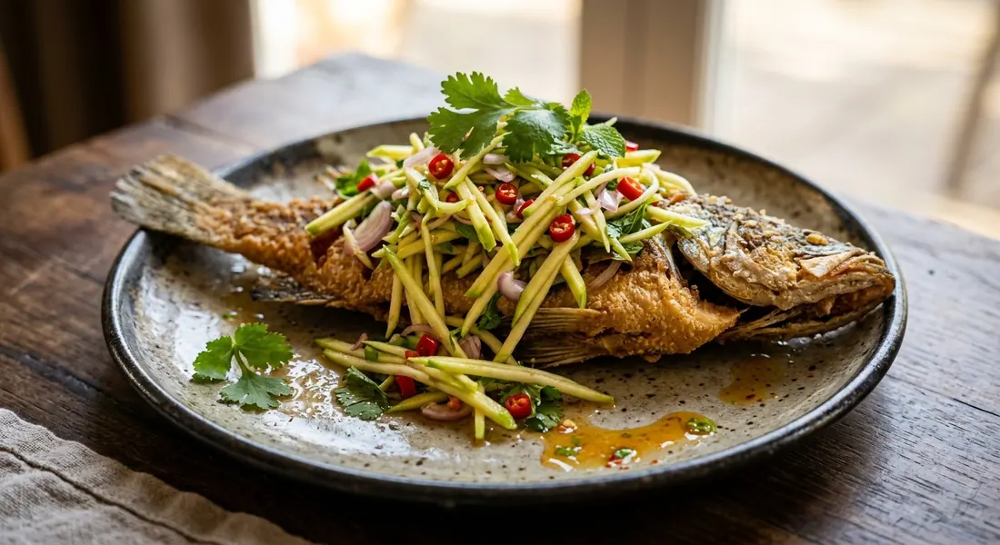

A crisp whole fried fish, broken over a sharp, bright salad of shallots, chillies, herbs and sour mango — hot crunch against cold, sour dressing.

Yum pla tod is the answer to a problem every Thai restaurant kitchen knows: fried fish is glorious for ten minutes, then the skin softens and nobody orders it. Fix it by tearing the fish apart while it is still crackling and tossing it through a sharp yum dressing — chillies, shallots, fish sauce, lime and a hit of sour mango. The heat of the fish wilts the herbs just slightly, and every bite carries hot crunch against cold, sour dressing.
On UK Thai menus it usually appears as "sea bass yum" or "pla kapong tod yum" — Thai Aroy Dee in Leeds lists it as Sea Bass Yum. Thai cooks argue about the details: whole fish or steaks, mango or lemongrass, salad on top or on the side. The page below covers the version you will actually be served, and where the sources split.
| Thai | English | Amount |
|---|---|---|
| ปลากะพง | Sea bass (pla kapong), gutted, scaled, patted bone-dry | 1 whole (600–800 g) |
| แป้งทอดกรอบ | Crisp-fry flour (or cornflour), light dusting | 2–3 tbsp |
| น้ำมันพืช | Vegetable oil for deep-frying | enough to submerge |
| มะม่วงเปรี้ยว | Sour green mango, julienned | 100 g |
| หอมแดง | Shallots, thinly sliced | 40 g / 5–6 bulbs |
| ตะไคร้ | Lemongrass, very thinly sliced (tender heart only) | 2–4 stalks |
| พริกแดงจินดา | Red bird's-eye chillies, sliced | 5–20 (heat to taste) |
| ขึ้นฉ่าย | Chinese celery (or coriander), leaves and stems | 1 small handful |
| น้ำมะนาว | Lime juice | 2–4 tbsp |
| น้ำปลา | Fish sauce | 1–2½ tbsp |
| น้ำตาลปี๊บ / น้ำตาล | Palm sugar or white sugar | 1–2 tbsp |
| ถั่วลิสงทอด / เม็ดมะม่วง | Roasted peanuts or cashews, roughly crushed | 2 tbsp |
| ใบมะกรูด / ขิง | Kaffir lime leaves or young ginger (optional) | 2 leaves / 1 thumb |
Any firm white fish works: sea bass is the restaurant standard, but the sources also use sea bream, tilapia and small gourami. Skip the mango and build the salad around lemongrass, ginger and cashews (the Cookpad version), or serve the salad on the side with a fish-sauce caramel drizzled over the fish (the Wongnai version).
Whole fish or steaks? Cookpad fries a whole sea bass; Wongnai's restaurant-style recipe uses a thick steak dusted in flour. Whole fish gives you more crackling, steaks cook faster and suit sharing plates.
Mango: essential or optional? Three of the four sources build the salad around sour green mango (Kapook, TrueID, Wongnai). Cookpad skips it entirely and uses a lemongrass–ginger salad with cashews. The mango version is the one UK restaurants mean by "sea bass yum".
Salad on the fish, or beside it? Cookpad and TrueID toss the salad directly over the hot fish. Kapook and Wongnai plate the fried fish with the mango salad alongside — and Wongnai adds a third element: a quick fish-sauce caramel (nam pla lad) fried in the wok and poured over the fish.
Dressing balance. The sources disagree on how sweet the yum should be. TrueID uses almost twice as much sugar relative to fish sauce; Kapook's is sweetest of all (2 tbsp palm sugar to 1½ fish sauce). Northern-style yum leans sour; central-Thai restaurant versions lean sweet.
Peanuts or cashews? TrueID and Wongnai use roasted peanuts (and Wongnai adds fried dried shrimp); Cookpad and Kapook use salted cashews. Both are garnish-crunch, not flavour load-bearers.
This recipe is translated from the following Thai-language sources. Where they disagree, we've said so.